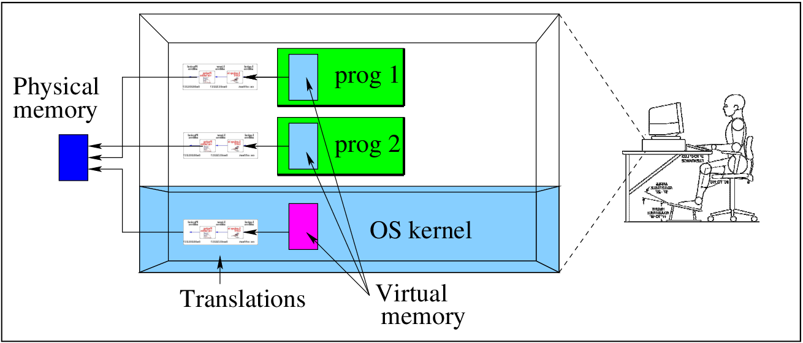
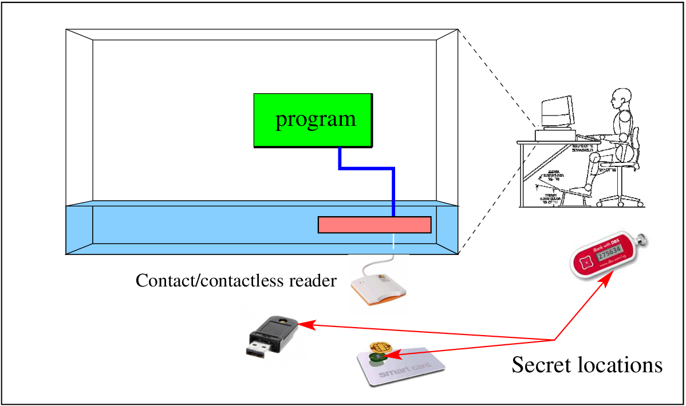

DADA2026:9
Defence against the Dark Arts
Ninth topic - Machine architecture [H10]
Memory...

Outline
- The buffer overflow attack
- General advice for safe practice
- Hiding secrets
- Security hardware
Attacks on memory...
Outline
- The buffer overflow attack
- General advice for safe practice
- Hiding secrets
- Security hardware
Process use of memory


The processes, and the OS kernel, each have their own view of memory, somehow mapped/translated to the real (physical) memory. Modern operating systems and hardware give each process an individual address space - starting at 0x0.
A translation unit maps this virtual address to a real physical address, in fixed size pages.
VM=paging+segments (+disk)...[4]

The part of the disk used in this way is called the 'swap' - it may be either a file used for the purpose, or a partition of disk.
When a VM system attempts to find a page, and does not find one, it is known as a page fault.
When a page fault occurs, the OS must replace a page in memory, efficiently, with the new one.
Sample memory arrangement: Linux ELF format
| This is just one possible arrangement of virtual memory (the view that the process has of its memory in a Linux system). In this arrangement, the stack is at the top of the memory, and grows downwards. Hooray for computer scientists, who famously believe that both stacks and trees grow downwards. The code and its fixed storage is at the bottom end of memory, and the malloc'ed memory is “above” the program. Libraries are found at 0x40000000. The odd names are historical. BSS stood for “Block Starting Symbol”, the segment of memory where variables would be stored. The data area was for values that were pre-loaded. |

Memory attack 1: simple Program

[hugh@pnp176-44 programs]$ ./vulnerable test Argument is test [hugh@pnp176-44 programs]$
but...
Memory attack 1: stack buffer overflow[5,ctrl-i1]
| On the left we see detail of the stack usage for a buffer, variables, and the “return” address. To the right we see the buffer overwriting the local variables in the frame, and then changing the return address. The payload in the “EGG” is structured to provide some exploit. It has multiple return addresses, and since the stack may be moving, multiple no-ops. |
|
|


Using the buffer overflow attack

- A server (say a web server) that expects a query, and returns a response.
- A CGI/ASP or perl script inside a web server.
- A SUID root program on a UNIX system.
Find a program that has a buffer, ... and that does not check its bounds. Then deliver an EGG to it to overflow the buffer.
Memory attack 2: return to libc![i2]

If, for example, we cannot execute/run code on the stack, then we can still use a buffer overflow, to “point to” some library function, like execv(), which will run a named program we provide.
Memory attack 3: return oriented programming[i3]

Again, with DEP, we may be able to find snippets of executable code elsewhere, and then use a series of stack addresses to jump to those code snippets.
Memory attack 4: heap overflow

The attacker uses the OS GC to write the address of malicious code into a return-address location, as for the buffer overflow.
Memory attack 5: OpenSSL Heartbleed[i6]

Though heartbleed has an easy fix, there still are systems vulnerable to it.
Outline
- The buffer overflow attack
- General advice for safe practice
- Hiding secrets
- Security hardware
Conservative code: modularity[i7]

Modular design (see [i7] above) is an effective way of building software.
In a good modular design concerns are separated such that
- modules are more or less stand alone, and that
- when they do depend upon other modules of the system the interfaces are explicit.
The system designer/coder should reduce or minimize the dependencies.
Hiding secrets: data and algorithms
Outline
- The buffer overflow attack
- General advice for safe practice
- Hiding secrets
- Security hardware
Secrets come in lots of flavours[6]

We have seen how secrets can be useful, particularly for keeping keys for cryptography.
Secrets may also be algorithmic...
- An encryption algorithm
- A particular protocol (sequence of communications).
- A hashing algorithm.
These secrets are programs, not data. How do we keep all these sorts of secrets?
Applications running on PCs, phones, ...

Often, the executable is distributed, not the source. RMS points out many reasons why this is most likely a bad idea.
But, in a security scenario, you may think that by only distributing your executable code, you can hide your source code secrets.
This is a silly idea. You should keep no secrets in source code.
- You should not have source code secrets (remember the notion of open design), and
- you cannot hide things by using compilation.
Applications are an open book...


If the platform is sufficiently complex (e.g, Windows, GNU+Linux, Android, Symbian), then it is likely that sources for any application could be generated easily, so if you intend to distribute your application to other users, and it relied on some secret in the code, that secret is unsafe.
Of course - you can still have secrets. They must be kept separately. (Do I detect an example of Least common mechanism: Minimize the amount of mechanism common to more than one user and depended on by all users?)
Possible locations for secrets


Consider all the possible locations for secrets. Relying on external agents is not a bad idea, particularly if they are built with security in mind.
Outline
- The buffer overflow attack
- General advice for safe practice
- Hiding secrets
- Security hardware